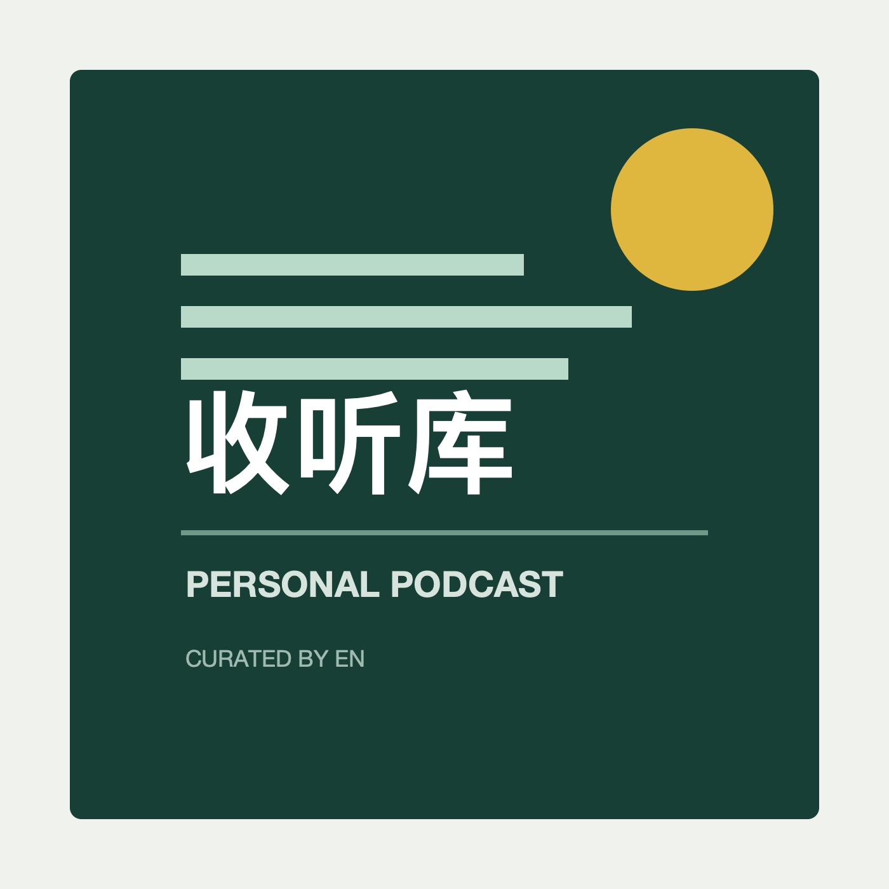

收听库
将公开视频转换为原始音频进行收听的个人播客库。保留原作者声音、标题、封面、简介和原始来源，不进行 AI 总结、改写或配音。
订阅 RSS节目
- 段永平早期采访：大道至简 重温阿段早年拍下巴菲特午餐后的专访，诸多理念，多年来始终知行合一。#段永平 #投资 #成…2026-08-12 · 17:33原始来源
- 北大教授程乐松：我凭什么说教年轻人？我自己手上都没有人生地图 他说自己活得既不精致，也没品味；他说高中时抄作业、大学天…2026-08-12 · 49:38原始来源
- 第一集｜老，到底可不可以慢一点？ #阿雅 #和时间做朋友 #诊室之外 #视频播客扶持计划#走进生命医线-2026-08-12 · 11:39原始来源
- 周受资：AI时代，未知里藏着真创新 周受资在南洋理工大学的毕业演讲： AI时代，别总待在自己最擅长的地方。 从父亲…2026-08-12 · 9:39原始来源
- 未来寿命能到150岁？周轶君硬核拆解：当肉体不再衰老，我们的大脑准备好了吗？2026-08-12 · 15:19原始来源
- 周轶君在节目中分享人生感悟：“我们现在要开始储存肌肉、储存钱、储存精神爱好。” #圆桌派 #圆桌晚晴派-2026-08-12 · 1:06原始来源
- 私募大佬韩广斌早期珍贵采访2026-08-11 · 26:45原始来源
- 大厂agent面试没那么恶心，来来回回就四类 #大厂 #互联网 #AI #面试 #找工作-2026-08-11 · 8:00原始来源
- 王强：AI时代，提问能力比答案更珍贵 AI时代，答案会越来越多，真正稀缺的是能把问题问对的人。 #章泽天 #王强 …2026-08-11 · 8:55原始来源
- 原始来源
- 从零搭建AI知识库（姜胡说）2026-08-09 · 16:56原始来源
- 西湖大学2026本科开学典礼，校长施一公教授致辞！ #西湖大学 #施一公 #开学典礼 #有典有故 #焦坪女婿-2026-08-09 · 19:33原始来源
- 陆奇最新演讲完整视频｜大模型带来的新范式 新时代 新机会2026-08-02 · 2:14:53原始来源
- 【演讲】罗永浩15堂演讲私教课（老罗） p01 01如何克服“演讲恐惧症”？2026-08-02 · 10:18原始来源
- AI怎么就成了能源之战？大厂们准备怎么战？2026-08-02 · 19:18原始来源
- 【油管5000w播放】乔布斯在斯坦福大学毕业典礼上的演讲！2026-08-01 · 14:25原始来源
- 「现代高能物理学之认识」杨振宁教授1964年香港中文大学演讲2026-08-01 · 59:38原始来源
- 理想高管全面复盘：从谷底的 MEGA，到翻盘的 MEGA Home2026-08-01 · 59:10原始来源
- AI巨头们之间的资本混战，到底是个什么情况？2026-08-01 · 19:28原始来源